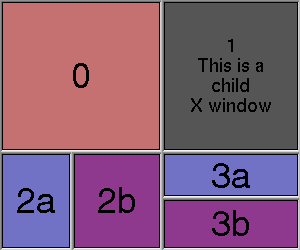

Fl_Group | +----Fl_Tile
#include <FL/Fl_Tile.H>
The Fl_Tile class lets you resize the children by dragging the border between them:

Fl_Tile allows objects to be resized to zero dimensions. To prevent this you can use the resizable() to limit where corners can be dragged to.
Even though objects can be resized to zero sizes, they must initially have non-zero sizes so the Fl_Tile can figure out their layout. If desired, call position() after creating the children but before displaying the window to set the borders where you want.
The "borders" are part of the children - Fl_Tile does not draw any graphics of its own. In the example above, all of the children have FL_DOWN_BOX types, and the "ridges" you see are actually two adjacent FL_DOWN_BOX's drawn next to each other. All neighboring widgets share the same edge - the widget's thick borders make it appear as though the widgets aren't actually touching, but they are. If the edges of adjacent widgets do not touch, then it will be impossible to drag the corresponding edges.